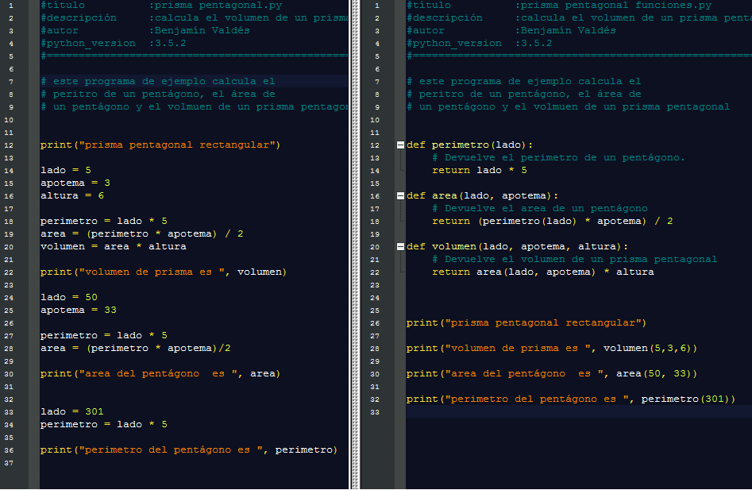

Autoestudio sobre funciones.
Autoestudio sobre funciones. |
TC 1028. Pensamiento Computacional para Ingeniería . |
Actividad: Autoestudio sobre funciones
Autoestudio sobre funciones.
Realizarás el autoestudio que presenta los conceptos de funciones.
 Modalidad
Modalidad
Individual.
 Objetivos
Objetivos
 Instrucciones
Instrucciones
Estudia los siguientes conceptos, haz notas y contesta las preguntas de Revisión de autoestudio en tu libreta.
Te recomendamos el uso de las siguientes fuentes:
Libro de texto: Autoestudio3.pdf (Fernandez, A. Python 3: Al Descubierto Alfaomega, 2013, ISBN 978-607-707-718-3)
 Revisión de
autoestudio
Revisión de
autoestudio
Responde las siguientes preguntas:
1. Cambia el siguiente código para que esté en una
función y se mande a llamar desde un script. La funcion debe recibir el radio y
devolver el area, la impresión debe de hacerse desde donde se manda a llamar la
función.
PI = 3.1415
2. Observa el siguiente ejemplo de como se separar un
programa en diferentes funciones:
 Usando estos documento como referencia
prisma pentagonal.py
y
prisma pentagonal funciones.py
.
separa el siguiente programa
script.py
en funciones. Incluye las funciones en tus notas
3. Los siguientes son ejemplos de unos casos de prueba
ejemplos
casos de prueba . Haz 3 casos de prueba de las funciones que realizaste en la pregunta anterior.
Incluye las funciones en tus notas. Las preguntas se revisarán en su libreta al inicio
de la clase. .
 Recursos
Recursos
 Especificaciones de entrega
Especificaciones de entrega
© 2019 Escuela de Computación y
Mecatrónica
.